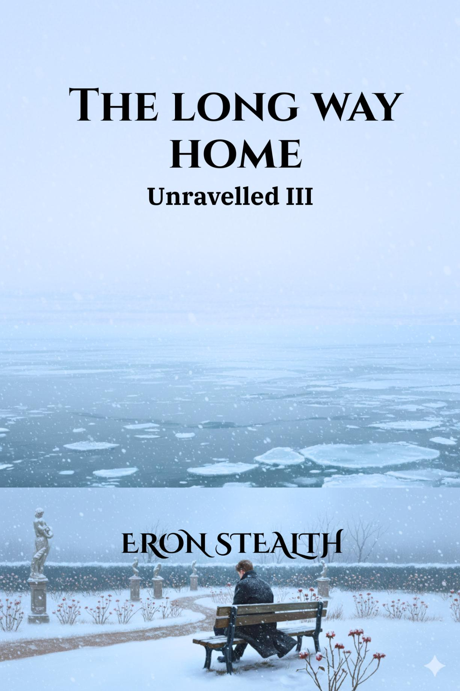

← Back to Unravelled
The Long Way Home
Unravelled III

Years later the shapes have changed. Alex works behind a desk with floor-to-ceiling windows. Dan still keeps the old ease alive. The memory of what once was still haunts Alex in the silence. When fate comes calling, the struggle becomes whether to keep living with what has already been lost, or answer the slower question of what should be. Some journeys take the long way home.
Excerpt
The office of Alexander Michaels was sleek yet understated—designed for efficiency rather than extravagance. The floor-to-ceiling windows cast a soft afternoon glow over the minimalist interior, where deep-toned furniture balanced modern steel accents. The shelves were lined not just with industry books but also small, personal touches—an old framed photograph from college, a signed football from one of his favourite footballers.
Dan leaned back comfortably in one of the guest chairs, spinning a pen between his fingers. “You know,” he mused, “I don’t think you ever actually intended to pay up on that bet.”
Alex, seated behind his desk, didn’t even look up from the file he was signing. “Then why have we been having this incredibly long five-day routine? Besides, you won on a technicality.”
“A win is a win,” Dan grinned, stretching out his legs. “Five days of coffee, courtesy of Mr. C.E.O. himself.”
Buy the Series
Return to Unravelled →